Go
概要
Go言語はGoogleによって開発されたProgramming Language。シンプルさをコンセプトにしているという。DockerはGoで書かれている。
Memo
TODO Understanding Nil in Go: Unique Comparison Behaviors | by Beck Moulton | Jan, 2024 | Level Up Coding
Goのnilを理解する。
TODO 100 Go Mistakes
Go言語でありがちな間違い。
oapi-codegenを使ってみた - Speaker Deck
oapi-codegenの使い方。とくにバリデーションが参考になる。
[Golang] gorpでDBを使ったユニットテストを書くたったひとつの冴えたやりかた - くろのて
factory-botを便利に使う方法。
ポインタを渡すのにいちいち変数にしなくてよい
引数にポインタをとるとき。↓のようにしたくなる。
i := 1 xxxx(&i)
実際は↓のように短く書ける。
func GetPtr[T any](x T) *T {
return &x
}
xxxx(GetPtr(1))
What happens with closures running as goroutines
func main() {
done := make(chan bool)
values := []string{"a", "b", "c"}
for _, v := range values {
go func() {
fmt.Println(v)
done <- true
}()
}
// wait for all goroutines to complete before exiting
for _ = range values {
<-done
}
}
vに入るインスタンスはループ間で共通である- ループがまわり切ってから、goルーチンが実行される。goルーチンが実行されるときには、インスタンスは最後の
"c"になっている
delveを使う
gdbだと謎のgoroutineらしきものがたびたび挿入される( runtime.sigtramp )。直し方がよくわからないのでやめた。代わりにdelveを使うことに。構造体の表示がいい感じだ。使い方はだいたい同じ。
Emacsの M-x gdb と同等になるのがbenma/go-dlv.elで配布されている。dap-modeよりこちらが好み。 (dlv-current-func) を使う。
gdbで変数表示すると<optimized out>となるのを防ぐ
コンパイル時に最適化した結果、変数や式を削除することがある。その場合デバッガで表示できなくなる。コンパイルオプションで最適化を無効化すると表示できる。
go build -gcflags="-N -l" main.go
オプションパターン
オプションがたくさんある、でかいコードベースで見る表現の解説を見つけた。
package main
import "fmt"
type Config struct {
Host string
Port int
Username string
Password string
}
type Option func(*Config)
func WithHost(host string) Option {
return func(c *Config) {
c.Host = host
}
}
func WithPort(port int) Option {
return func(c *Config) {
c.Port = port
}
}
func WithCredentials(username, password string) Option {
return func(c *Config) {
c.Username = username
c.Password = password
}
}
func NewConfig(options ...Option) *Config {
config := &Config{
Host: "localhost",
Port: 8080,
Username: "",
Password: "",
}
for _, option := range options {
option(config)
}
return config
}
型でラップする
型で挙動を変える書き方ができる。
type Mover bool
const (
Animate = Mover(true)
DontAnimate = Mover(false)
)
func (m Mover) move() { }
Animate.move()
DontAnimate.move()
ゴルーチンはそれが作られたアドレス空間と同じ空間で実行する
Go言語による並行処理から。
ゴルーチンの中でクロージャーを実行すると、クロージャーはこれらの変数のコピーに対して操作するのか、それとも元の変数の参照に対してか。
var wg sync.WaitGroup
salutation := "hello"
wg.Add(1)
go func() {
defer wg.Done()
salutation = "welcome"
}()
wg.Wait()
fmt.Println(salutation)
welcome
ゴルーチンはそれが作られたアドレス空間と同じ空間で実行する、ということ。
var wg sync.WaitGroup
for _, salutation := range []string{"hello", "greetings", "good day"} {
wg.Add(1)
go func() {
defer wg.Done()
fmt.Println(salutation)
}()
}
wg.Wait()
good day good day good day
- ゴルーチンが開始する前にループが終了してしまう
- salutation変数はスコープ外になる
- Goランタイムは変数salutationの参照がまだ保持されているのを知っていて、ゴルーチンがそのメモリにアクセスし続けられるようにメモリをヒープに移す
- 文字列スライスの最後の“good day”への参照を保持したままヒープに移される
ループを想定したようにただしく書くには、salutationのコピーをクロージャーに渡して、ゴルーチンが実行されるようになるまでにループの各繰り返しから渡されたデータを操作できるようにする。
var wg sync.WaitGroup
for _, salutation := range []string{"hello", "greetings", "good day"} {
wg.Add(1)
go func(salutation string) {
defer wg.Done()
fmt.Println(salutation)
}(salutation)
}
wg.Wait()
good day hello greetings
golanglint-ci のgci warningが出たとき
原因はよくわからない。ツールをインストールしてフォーマットをかける。
main.go:24: File is not `gci`-ed with –skip-generated -s standard,default (gci)
go install github.com/daixiang0/gci@latest gci write --skip-generated -s standard,default .
カバレッジ計測方法
カバレッジフラグをオンにしているとコンパイル時、各ブロックにカウンタが挿入されて実行されている。
一部のテストを実行する
ファイル指定でテストを実行しようとすると、ほかのパッケージを読み込んでくれないため走らせられないことがある。多くの場合、ほかのファイルへの読み込みがあるので、現実的ではない。なので、読み込むファイルは全体にして、走らせる関数を指定して一部だけ実行する。
go test ./... -run Buildinfo
スタックとヒープ
- メモリの読み書きを行う場所は、スタックとヒープに分かれる
- スタックはメモリの使い方や使用量がコンパイル時に決定できる場合に用いられる
- 関数呼び出し時に確保され、関数から抜けるときに開放される。
- あらかじめどのメモリをどれだけ使うかわかっているため、必要になる直前で確保し、いらなくなったらすぐに破棄できメモリを効率よく使える
- ヒープはメモリの使い方や使用量が実行時にしかわからない場合に用いる
- ヒープに確保した変数の生存期間は用途によってバラバラ
- ガベージコレクタを用いてヒープのメモリを集中管理し、しかるべきタイミングで解放する
- GoではGC時にSTW(Stop The World)が発生するものを採用しているので、GCが動いている間はプログラムの実行が止まる
- なので、パフォーマンスを考慮するときはメモリを確保する先がスタックになるかヒープになるかは重要
- 変数の型が実態で定義される場合、Goはその変数をスタック上に確保する。C言語と同じ
- 変数の型をポインタにすると、メモリはヒープかスタックのどちらかに確保される
- スタックはメモリの使い方や使用量がコンパイル時に決定できる場合に用いられる
一時ファイルを作る
- os.CreateTemp が便利
- os.MkdirTemp → ディレクトリ
- (*testing.T).TempDir → テストで便利。テスト関数の終了時にディレクトリを消してくれる
大文字かを確認する
fmt.Print(unicode.IsUpper('a'))
false
fmt.Print(unicode.IsUpper('A'))
true
goimportsが必要なパッケージを消してしまうときに確認すること
goimportsは面倒なimportを自動で書いてくれる便利なパッケージ。必要なパッケージを自動で消してしまうのでハマった。チェックリストを残す。
- 名前は合っているか。特に自分のパッケージを読み込む場合、module名と一致しているか
- 本当にその箇所から読み込めている記述になっているか。publicな呼び出しになっているか
copyは固定長のsliceに対してしかできない
copyはその名の通りsliceをコピーするメソッド。固定長でないとコピーされない。
カバレッジを計測する
$ go test -coverprofile=cover.out . $ go tool cover -html=cover.out -o cover.html
Golang/goのリポジトリ全体を計測する。
cd ./src
./all.bash
../bin/go test -cover ./... -coverprofile=cover.out
../bin/go tool cover -html=cover.out -o cover.html
対象のインターフェースを満たしている関数の一覧を見る
godoc -http ":8000" -analysis type # http://localhost:6060/pkg/io/
失敗する可能性のあるときはerrorを返す
func (w *Wallet) Withdraw(amount Bitcoin) error {
if amount > w.balance {
return ErrInsufficientFunds
}
w.balance -= amount
return nil
}
成功したときは、errorにnilが入る。
error時の処理は呼び出し元で定義し、errorを返す可能性のある関数定義では単にerrorを返すことだけに集中する。
named return value
返り値に名前をつける機能。最初に初期化され、returnするとそれ時点の名前のついた変数が返される。
func test() (value1, value2 int) {
value1 = 1
value2 = 2
return
}
とすると、返り値には1, 2が返る。長い関数だとわかりづらくなるので注意。
コールグラフを活用して関数呼び出しの全体像を把握する
どの関数がどこから呼び出されているかの図を生成する。
go install github.com/ofabry/go-callvis@master # なぜかlatestバージョンでは失敗した
そして調べたい関数を呼び出したmain.goのあるディレクトリで実行する。
go-callvis -group pkg,type ./ # -groupはグルーピング表示するオプション go-callvis -group pkg,type -focus fmt ./ # フォーカス表示
と、ブラウザが立ち上がって、図が表示される。図の中のライブラリをクリックすると、さらにそのライブラリの呼び出しを描画する。
go getしたときの証明書エラー
go get したとき x509: certificate signed by unknown authority エラーになる。
証明書の更新をすればよいとのこと。
$ sudo apt update $ sudo apt install --only-upgrade -y ca-certificates #最新 $ update-ca-certificates
リクエストデータを構造体にバインドする
リクエストを使うときに通常使われる方法。値の検証と後で利用しやすくするため、定義した構造体に入れる。
構造体の埋め込みの使い方
Goの埋め込みの解説。
埋め込みはあくまでも借りているだけで、埋め込み元のオブジェクトのメソッドとして実行される。埋め込み先の構造体が埋め込み元のメソッドを実行しても埋め込み先のオブジェクトには影響を与えない。
ポインタを図で理解する - Carpe Diem
図によるポインタのわかりやすい解説。
var x = 100
fmt.Println("1: x address:\t", &x)
var y *int
fmt.Println("2: y value:\t", y)
fmt.Println("3: y address:\t", &y)
y = &x
fmt.Println("4: y value:\t", y) // yの値には、xのアドレスが入っている
fmt.Println("5: y address:\t", &y)
1: x address: 0xc00001a0c0 2: y value: <nil> 3: y address: 0xc000012030 4: y value: 0xc00001a0c0 5: y address: 0xc000012030
- 型としての
*- ポインタ変数はメモリ上のアドレスを値として入れられる変数
- 変数の中身(つまり値)はメモリアドレス
- 変数の演算子としての
*,&*ポインタの指すメモリアドレスの実データ(value)&変数がメモリ上で確保された際のアドレス(address)
*x だけど x がポインタ型変数でない場合、値にアドレスがなくて辿れず当然値も取得できないのでエラー。
- メモリアドレスは変数であれば必ず存在する。なのでどの変数でも
&が使える - valueは値(1)か、メモリアドレス(0xc00001a0c0)が入っているか、nil。値にメモリアドレスが入っている場合のみ
*が使える
var x *int
fmt.Println("x value:\t", *x)
panic: runtime error: invalid memory address or nil pointer dereference [signal SIGSEGV: segmentation violation code=0x1 addr=0x0 pc=0x480f1a]
ポインタ変数のvalueにメモリアドレスがないのでpanicが起きる。動かしてみないとわからないのでコンパイルエラーでなくruntimeエラー。
Goはすべて値渡し(=コピー)。
func main() {
var x = "alice"
fmt.Println("x address:\t", &x)
y := &x
fmt.Println("y value:\t", y)
fmt.Println("y address:\t", &y)
show(y)
}
func show(s *string) {
fmt.Println("f value:\t", s)
fmt.Println("f address:\t", &s)
}
x address: 0xc000014250 y value: 0xc000014250 y address: 0xc000012030 f value: 0xc000014250 f address: 0xc000012038
定義された変数と、関数引数として使われた変数では、参照先アドレスは同じ(xのアドレス)。アドレスは異なる、つまりコピーされている。
ポインタレシーバ。
type Person struct {
Name string
Age int
}
func main() {
x := &Person{"alice", 20}
fmt.Printf("x value:\t%p\n", x)
fmt.Printf("x address:\t%p\n", &x)
x.Greet("test")
fmt.Printf("new x value:\t%v\n", x)
}
func (p *Person) Greet(msg string) {
fmt.Printf("p value:\t%p\n", p)
fmt.Printf("p address:\t%p\n", &p)
// ポインタ変数を上書きするのではなく、参照先を上書きする
p.Name = "hahaha"
}
x value: 0xc000010030 x address: 0xc000012028 p value: 0xc000010030 p address: 0xc000012038 new x value: &{hahaha 20}
レシーバーを値とポインタのどちらにするか
メソッドのレシーバーを値にするかポインタにするかは、レシーバのフィールドに変更をしたいかによって決める。
func (s Struct) SetValue(v int {
s.v = v
})
func (s *Struct) SetValue(v int {
s.v = v
})
ポインタの操作
- ポインタ型を示すときは
*Personと宣言。これによってPerson型の変数のポインタが入ることが示される - ポインタ型を生成するときは
&を使う。これは変換関数のようなもの。&変数名という形式。実際に変数宣言されているものに対してポインタがある。それぞれにアドレスが割り当てられるようなもの。だから、型とか関数自体はポインタにしない(意味がない)。あくまで変数をリンクさせて、変更を波及させられるのが良いところだから - ポインタを解決実際の値を見るときは *p
- &p で*Person型を生成する、というような関係性
var p *int // 変数pには、int型の変数のポインタが入るという宣言 i := 1 p = &i // 変数iを参照するポインタ型変数p // p // -> 0xc000010000 // *p // -> 1 fmt.Println(p) fmt.Println(*p) i = 2 // あくまで変えるのは参照先の値であって、p -> i のリンク自体を変えるわけじゃない fmt.Println(p) // メモリアドレスは変わらない fmt.Println(*p) // 参照先のアドレスが変わった
0xc00001a0c0 1 0xc00001a0c0 2
- 「アドレスを取得(&)」という操作と「アドレスを解決(*)」という操作がある。
TODO Goでファイルの存在チェック - Qiita
存在チェックの方法。
ファイル埋め込み
//go:embed sample.json var sampleBytes []byte
ファイルを直に変数に入れることができる。いちいち読み込みのコードを書かなくて良くなる。
複数ファイルの埋め込みもできる。
//go:embed README.md version.txt
var static embed.FS
r, err := static.Readfile("README.md")
確かに短く書ける。しかしこれだけなら、従来の方法でもできる。メリットは、設定ファイルをバイナリに埋め込めること。
変数名のかぶりに注意する
型名と同じ変数名を宣言すると、よりローカルな変数名が優先されるため、その型が使えなくなる。それだけでなく、型指定で~は型ではありませんエラーが謎に出るため、ハマる可能性が高い。Lintで防げるだろうか。
よく使う型の定義
- fdはファイルディスクリプタ。プログラムからファイルを操作する際、操作対象のファイルを識別・同定するために割り当てられる番号
https://github.com/kd-collective/go/blob/a813be86df74bf2a9c5b272c0b0934d196ac665d/src/os/file_unix.go#L54-L61
type file struct { pfd poll.FD name string dirinfo *dirInfo / nil unless directory being read nonblock bool / whether we set nonblocking mode stdoutOrErr bool / whether this is stdout or stderr appendMode bool / whether file is opened for appending }
- ネットワークで使うConnインターフェース
https://github.com/kd-collective/go/blob/a813be86df74bf2a9c5b272c0b0934d196ac665d/src/net/net.go#L113-L168
type Conn interface { / Read reads data from the connection. / Read can be made to time out and return an error after a fixed // time limit; see SetDeadline and SetReadDeadline. Read(b []byte) (n int, err error)
/ Write writes data to the connection. / Write can be made to time out and return an error after a fixed // time limit; see SetDeadline and SetWriteDeadline. Write(b []byte) (n int, err error)
/ Close closes the connection. / Any blocked Read or Write operations will be unblocked and return errors. Close() error
// LocalAddr returns the local network address, if known. LocalAddr() Addr
// RemoteAddr returns the remote network address, if known. RemoteAddr() Addr
/ SetDeadline sets the read and write deadlines associated / with the connection. It is equivalent to calling both / SetReadDeadline and SetWriteDeadline. / / A deadline is an absolute time after which I/O operations / fail instead of blocking. The deadline applies to all future / and pending I/O, not just the immediately following call to / Read or Write. After a deadline has been exceeded, the / connection can be refreshed by setting a deadline in the future. / / If the deadline is exceeded a call to Read or Write or to other / I/O methods will return an error that wraps os.ErrDeadlineExceeded. / This can be tested using errors.Is(err, os.ErrDeadlineExceeded). / The error’s Timeout method will return true, but note that there / are other possible errors for which the Timeout method will / return true even if the deadline has not been exceeded. / / An idle timeout can be implemented by repeatedly extending / the deadline after successful Read or Write calls. / // A zero value for t means I/O operations will not time out. SetDeadline(t time.Time) error
/ SetReadDeadline sets the deadline for future Read calls / and any currently-blocked Read call. // A zero value for t means Read will not time out. SetReadDeadline(t time.Time) error
/ SetWriteDeadline sets the deadline for future Write calls / and any currently-blocked Write call. / Even if write times out, it may return n > 0, indicating that / some of the data was successfully written. // A zero value for t means Write will not time out. SetWriteDeadline(t time.Time) error }
ファイルを開く関数
- Open(), Create() は引数が違うだけで同じ関数OpenFile()を呼び出している
- よく使う権限の組み合わせでラップしているだけ
https://github.com/kd-collective/go/blob/a813be86df74bf2a9c5b272c0b0934d196ac665d/src/os/file.go#L311-L313
func Open(name string) (*File, error) { return OpenFile(name, O_RDONLY, 0) }
https://github.com/kd-collective/go/blob/a813be86df74bf2a9c5b272c0b0934d196ac665d/src/os/file.go#L320-L322
func Create(name string) (*File, error) { return OpenFile(name, O_RDWR|O_CREATE|O_TRUNC, 0666) }
https://github.com/kd-collective/go/blob/a813be86df74bf2a9c5b272c0b0934d196ac665d/src/os/file.go#L330-L339
func OpenFile(name string, flag int, perm FileMode) (*File, error) { testlog.Open(name) f, err := openFileNolog(name, flag, perm) if err != nil { return nil, err } f.appendMode = flag&O_APPEND != 0
return f, nil }
基本コマンド
go mod init example
go install
go run hello.go
Emacs dap-modeでデバッガ起動。行の横をクリックしてブレークポイントをセットしたのち、コマンド実行。
M-x dap-debug
org-modeでの実行方法
ob-goをインストールして (require "ob-go") する。実行方法が少し変わっていて、下のように指定する。
fmt.Println("hello world")
hello world
EmacsにLSP+DAPを設定する
DAP(Debug Adapter Protocol)はデバッガー補助。エディタ関係なくIDEのようにエディタ上でブレークポイントをセットできるプロトコル。LSPのデバッガーバージョンな概念。
Go用のデバッガはemacsコマンドでインストールできず、go installでインストールする必要がある。
- Configuration - DAP Mode
- 外部コマンドをgo installでインストール
- LSPのライブラリ名は
gopls - Debuggerのライブラリ名は
delve(注意: VScode用のプログラムを用いる方法はdeprecatedで、現在は直接installするのが最新)
- LSPのライブラリ名は
- go installしたあと、Emacs側が認識できるように設定する
- 外部コマンドをgo installでインストール
$ go install golang.org/x/tools/gopls@master # Language Server $ go install github.com/go-delve/delve/cmd/dlv@master # debugger
自分の環境では一瞬デバッガのボタンが表示されて Debug Adapter finished になってしまう状態になった。Warningには Warning (emacs): Initialize request failed: Failed to launch Disable showing Disable logging が表示される。理由がよくわからないため、表示させる。 (setq dap-print-io t) を評価すると、messageバッファに詳細なログを出力する。
原因は、しっかりと表示されていた。
“format”: “Failed to launch: Go version 1.14.15 is too old for this version of Delve (minimum supported version 1.17, suppress this error with –check-go-version=false)”,
ということで、goのバージョンを上げると無事デバッガが起動するようになった。
$ go install github.com/uudashr/gopkgs/cmd/gopkgs # Go パッケージ $ go install golang.org/x/tools/cmd/goimports@master # import の過不足を自動で補完
printの仕組み
プリンターの状態を保存している、重要そうな構造体。
https://github.com/golang/go/blob/122a22e0e9eba7fe712030d429fc4bcf6f447f5e/src/fmt/print.go#L119-L120
// pp is used to store a printer’s state and is reused with sync.Pool to avoid allocations. type pp struct {
https://github.com/golang/go/blob/122a22e0e9eba7fe712030d429fc4bcf6f447f5e/src/fmt/print.go#L188-L202
func (p *pp) Flag(b int) bool { switch b { case ’-’: return p.fmt.minus case ’+’: return p.fmt.plus || p.fmt.plusV case ’#’: return p.fmt.sharp || p.fmt.sharpV case ’ ’: return p.fmt.space case ’0’: return p.fmt.zero } return false }
https://github.com/golang/go/blob/122a22e0e9eba7fe712030d429fc4bcf6f447f5e/src/fmt/print.go#L271-L273
func Print(a …any) (n int, err error) { return Fprint(os.Stdout, a…) }
- doPrintf
- printArg
- printValue
- printArg
- 実際画面に表示してるのはどこなんだろう
- print系の中でbufに書き込みをしているのはよく見る
- 関数の中に画面出力、みたいな部分は見当たらず
- 別に「画面に出力する」という関数があるわけじゃなくて、「標準出力にあたるファイルに書き込みをする」関数があるだけ。だから、標準出力以外への書き込みとの差は一切ない
- /dev/stdin は特殊ファイルという。画面への入出力などをファイルとして操作できるようにしたものだから、ファイル書き込みとなんら変わらずに操作できる
- Stdoutは1と定義されている。なので、fd1つまり/dev/stdout/1を作成する
https://github.com/kd-collective/go/blob/9b8750f53ed89fb326e4d811524e647683136bac/src/os/file.go#L66
Stdout = NewFile(uintptr(syscall.Stdout), “/dev/stdout”)
https://github.com/kd-collective/go/blob/9b8750f53ed89fb326e4d811524e647683136bac/src/cmd/vendor/golang.org/x/sys/unix/syscall_unix.go#L20
Stdout = 1
- print系は、ベースになる関数がある。書き込み先とフォーマット解析の組み合わせで、いろいろ名前がついている
- 本質的に、ファイル書き込みにすぎない
- フォーマット解析でいろいろ処理があって、多くを占める。各型での文字列の取り出し方とか
Stringerとは
よく見るが、何か。
https://github.com/kd-collective/go/blob/9b8750f53ed89fb326e4d811524e647683136bac/src/fmt/print.go#L63-L65
type Stringer interface { String() string }
type MyString string
func (s MyString) String() string {
return "mystring"
}
func main() {
s := MyString("hello")
fmt.Println(s) // String()の結果が使われる
}
mystring
printするときには、先にStringerの判定が入る。Stringerを満たしていれば、String()を使う。満たさなければ、通常の、printに渡された文字列引数を使って表示する。
https://github.com/kd-collective/go/blob/9b8750f53ed89fb326e4d811524e647683136bac/src/fmt/print.go#L670-L675
case Stringer: handled = true defer p.catchPanic(p.arg, verb, “String”) p.fmtString(v.String(), verb) return }
runeとは
- Goのruneを理解するためのUnicode知識 - Qiita
- 文字と01の並びを対応づける仕組み、それが文字コード。その1つのUnicodeは世界中のあらゆる文字列を収録されるために作られている規格
- aはUnicodeでu+0041と表される。16進数で0041という値と対応づけられる。この値はcode point(code position)と呼ばれ、文字コード中の位置を指し示す文字のIDといえる
- 符号化方式は41とか1F601といったcode pointの値をコンピュータが扱うデータ形式に置き換えるための規則。方式によってcode pointを何byte単位で扱うかが異なってくる
- Goでは符号化方式としてUTF-8を使用している。UTF-8では1byteから4byteの可変長データでcode pointを置換する。数字やアルファベットのような広く使われている文字は1byteになり、Unicodeに後から追加された絵文字などは4byteになる。
- Unicodeの符号化方式にはUTF-16やUTF-8がある
- stringにインデックスでアクセスしたときに得られるbyte値は文字コードをUTF-8で1byteごとに区切った値
s := "あ"
for i := 0; i < len(s); i++{
fmt.Printf("% x", s[i])
}
e3 81 82
- ひとつの文字は複数byteで表現される可能性がある。文字を表すbyteをまとめて読まないと正しい文字として認識できなくなる
- なので文字を数える単位としてはbyteではなくcode pointのほうが都合がいい。Goではcode pointを単位として文字を扱うための仕組み、つまりruneを用意している
- runeの実体はint32のエイリアス。int32なのはUnicodeの4byte分のcode pointを表現するため
https://github.com/kd-collective/go/blob/9b8750f53ed89fb326e4d811524e647683136bac/src/builtin/builtin.go#L90-L92
/ rune is an alias for int32 and is equivalent to int32 in all ways. It is / used, by convention, to distinguish character values from integer values. type rune = int32
fmt.Println('あ')
fmt.Println('a')
fmt.Println(' ')
fmt.Println('!')
fmt.Println('"')
fmt.Println('a' * 2)
fmt.Println('a' - 'b')
12354 97 32 33 34 194 -1
s := "あいう" fmt.Println([]rune(s)) fmt.Println([]byte(s))
[12354 12356 12358] [227 129 130 227 129 132 227 129 134]
イベントループなしでのハイパフォーマンス – C10K問題へのGoの回答 | POSTD
Goルーチンの解説。ベースがないのでよく理解できなかった。
goroutineはなぜ軽量なのか - Carpe Diem
Goルーチンの解説。よくわからなかった。
Tasks
TODO Garbage Collection In Go : Part I - Semantics
Goのガベージコレクションの解説記事。
TODO dgryski/go-perfbook: Thoughts on Go performance optimization
Goのパフォーマンス最適の読み物。
TODO 5分で完全理解するGoのiota - Speaker Deck
GoのiotaのTips。
TODO Goアセンブリの書き方 - Plan 9とGo言語のブログ
Goアセンブリの解説記事。
TODO go-internals - Go Internals
Goの内部仕様についての本。
TODO Goアセンブリ入門 - Qiita
Goアセンブリの解説。
package main
func add(a, b int32) (int32, bool) { return a + b, true }
func main() { add(10, 32) }
main.add STEXT nosplit size=71 args=0x8 locals=0x10 funcid=0x0 align=0x0 0x0000 00000 (/tmp/babel-ZDNznW/XkIsxn.go:2) TEXT main.add(SB), NOSPLIT|ABIInternal, $16-8 0x0000 00000 (/tmp/babel-ZDNznW/XkIsxn.go:2) SUBQ $16, SP 0x0004 00004 (/tmp/babel-ZDNznW/XkIsxn.go:2) MOVQ BP, 8(SP) 0x0009 00009 (/tmp/babel-ZDNznW/XkIsxn.go:2) LEAQ 8(SP), BP 0x000e 00014 (/tmp/babel-ZDNznW/XkIsxn.go:2) FUNCDATA $0, gclocals·g2BeySu+wFnoycgXfElmcg==(SB) 0x000e 00014 (/tmp/babel-ZDNznW/XkIsxn.go:2) FUNCDATA $1, gclocals·g2BeySu+wFnoycgXfElmcg==(SB) 0x000e 00014 (/tmp/babel-ZDNznW/XkIsxn.go:2) FUNCDATA $5, main.add.arginfo1(SB) 0x000e 00014 (/tmp/babel-ZDNznW/XkIsxn.go:2) MOVL AX, main.a+24(SP) 0x0012 00018 (/tmp/babel-ZDNznW/XkIsxn.go:2) MOVL BX, main.b+28(SP) 0x0016 00022 (/tmp/babel-ZDNznW/XkIsxn.go:2) MOVL $0, main.~r0+4(SP) 0x001e 00030 (/tmp/babel-ZDNznW/XkIsxn.go:2) MOVB $0, main.~r1+3(SP) 0x0023 00035 (/tmp/babel-ZDNznW/XkIsxn.go:2) MOVL main.a+24(SP), CX 0x0027 00039 (/tmp/babel-ZDNznW/XkIsxn.go:2) ADDL main.b+28(SP), CX 0x002b 00043 (/tmp/babel-ZDNznW/XkIsxn.go:2) MOVL CX, main.~r0+4(SP) 0x002f 00047 (/tmp/babel-ZDNznW/XkIsxn.go:2) MOVB $1, main.~r1+3(SP) 0x0034 00052 (/tmp/babel-ZDNznW/XkIsxn.go:2) MOVL main.~r0+4(SP), AX 0x0038 00056 (/tmp/babel-ZDNznW/XkIsxn.go:2) MOVL $1, BX 0x003d 00061 (/tmp/babel-ZDNznW/XkIsxn.go:2) MOVQ 8(SP), BP 0x0042 00066 (/tmp/babel-ZDNznW/XkIsxn.go:2) ADDQ \(16, SP 0x0046 00070 (/tmp/babel-ZDNznW/XkIsxn.go:2) RET 0x0000 48 83 ec 10 48 89 6c 24 08 48 8d 6c 24 08 89 44 H...H.l\).H.l$..D 0x0010 24 18 89 5c 24 1c c7 44 24 04 00 00 00 00 c6 44 $..\$..D$……D 0x0020 24 03 00 8b 4c 24 18 03 4c 24 1c 89 4c 24 04 c6 $…L$..L$..L$.. 0x0030 44 24 03 01 8b 44 24 04 bb 01 00 00 00 48 8b 6c D$…D$……H.l 0x0040 24 08 48 83 c4 10 c3 $.H…. main.main STEXT size=54 args=0x0 locals=0x10 funcid=0x0 align=0x0 0x0000 00000 (/tmp/babel-ZDNznW/XkIsxn.go:3) TEXT main.main(SB), ABIInternal, $16-0 0x0000 00000 (/tmp/babel-ZDNznW/XkIsxn.go:3) CMPQ SP, 16(R14) 0x0004 00004 (/tmp/babel-ZDNznW/XkIsxn.go:3) PCDATA $0, $-2 0x0004 00004 (/tmp/babel-ZDNznW/XkIsxn.go:3) JLS 47 0x0006 00006 (/tmp/babel-ZDNznW/XkIsxn.go:3) PCDATA $0, $-1 0x0006 00006 (/tmp/babel-ZDNznW/XkIsxn.go:3) SUBQ $16, SP 0x000a 00010 (/tmp/babel-ZDNznW/XkIsxn.go:3) MOVQ BP, 8(SP) 0x000f 00015 (/tmp/babel-ZDNznW/XkIsxn.go:3) LEAQ 8(SP), BP 0x0014 00020 (/tmp/babel-ZDNznW/XkIsxn.go:3) FUNCDATA $0, gclocals·g2BeySu+wFnoycgXfElmcg==(SB) 0x0014 00020 (/tmp/babel-ZDNznW/XkIsxn.go:3) FUNCDATA $1, gclocals·g2BeySu+wFnoycgXfElmcg==(SB) 0x0014 00020 (/tmp/babel-ZDNznW/XkIsxn.go:3) MOVL $10, AX 0x0019 00025 (/tmp/babel-ZDNznW/XkIsxn.go:3) MOVL $32, BX 0x001e 00030 (/tmp/babel-ZDNznW/XkIsxn.go:3) PCDATA $1, $0 0x001e 00030 (/tmp/babel-ZDNznW/XkIsxn.go:3) NOP 0x0020 00032 (/tmp/babel-ZDNznW/XkIsxn.go:3) CALL main.add(SB) 0x0025 00037 (/tmp/babel-ZDNznW/XkIsxn.go:3) MOVQ 8(SP), BP 0x002a 00042 (/tmp/babel-ZDNznW/XkIsxn.go:3) ADDQ $16, SP 0x002e 00046 (/tmp/babel-ZDNznW/XkIsxn.go:3) RET 0x002f 00047 (/tmp/babel-ZDNznW/XkIsxn.go:3) NOP 0x002f 00047 (/tmp/babel-ZDNznW/XkIsxn.go:3) PCDATA $1, $-1 0x002f 00047 (/tmp/babel-ZDNznW/XkIsxn.go:3) PCDATA $0, $-2 0x002f 00047 (/tmp/babel-ZDNznW/XkIsxn.go:3) CALL runtime.morestack_noctxt(SB) 0x0034 00052 (/tmp/babel-ZDNznW/XkIsxn.go:3) PCDATA $0, \(-1 0x0034 00052 (/tmp/babel-ZDNznW/XkIsxn.go:3) JMP 0 0x0000 49 3b 66 10 76 29 48 83 ec 10 48 89 6c 24 08 48 I;f.v)H...H.l\).H 0x0010 8d 6c 24 08 b8 0a 00 00 00 bb 20 00 00 00 66 90 .l$……. …f. 0x0020 e8 00 00 00 00 48 8b 6c 24 08 48 83 c4 10 c3 e8 …..H.l$.H….. 0x0030 00 00 00 00 eb ca …… rel 33+4 t=7 main.add+0 rel 48+4 t=7 runtime.morestack_noctxt+0 go:cuinfo.producer.main SDWARFCUINFO dupok size=0 0x0000 2d 4e 20 2d 6c 20 72 65 67 61 62 69 -N -l regabi go:cuinfo.packagename.main SDWARFCUINFO dupok size=0 0x0000 6d 61 69 6e main main..inittask SNOPTRDATA size=24 0x0000 00 00 00 00 00 00 00 00 00 00 00 00 00 00 00 00 ……………. 0x0010 00 00 00 00 00 00 00 00 …….. gclocals·g2BeySu+wFnoycgXfElmcg== SRODATA dupok size=8 0x0000 01 00 00 00 00 00 00 00 …….. main.add.arginfo1 SRODATA static dupok size=5 0x0000 00 04 04 04 ff …..
TODO 【Go】Mapの内部構造とO(1)のメカニズム
Mapの中身の解説。
TODO Reproducible Builds — a set of software development practices that create an independently-verifiable path from source to binary code
再現可能なビルド。
TODO Go言語のジェネリクス入門
ジェネリクスの解説。
TODO 入門Go言語仕様 / Go Specification Untyped Constants - Speaker Deck
Untyped Constantsの解説。
TODO (4) 列挙型の作り方を再考する - Go Conference 2023 Online - YouTube
iotaで作るのがデフォルトではあるけれど。
TODO Goを学びたての人が誤解しがちなtypeと構造体について #golang - Qiita
シンタックスの意味。
TODO Better C - Goと整数 #golang - Qiita
Goの整数の仕様の解説。
TODO Go Binary Hacks - go buildせずにビルドする #golang - Qiita
go buildの仕組み解説。全然わからん。
TODO Go at Google: Language Design in the Service of Software Engineering - The Go Programming Language
Goの言語デザインの解説。
TODO research!rsc: Go Data Structures: Interfaces
Russ Coxによるインターフェースの詳しい解説。
TODO Go’s Declaration Syntax - The Go Programming Language
Cのシンタックスとの違い、理由。
TODO Goアセンブラのクイックガイド
公式ドキュメントの翻訳。
TODO 解説&翻訳 - A Quick Guide to Go’s Assembler
Goアセンブラの解説。
TODO go build を使わずにGoプログラムをビルドする
go buildの仕組み。実際に動かして取っ掛かりを見つけるのが面白い。そういうアプローチもあるのか。
私はソースを読むよりもリバースエンジニアリングする方が得意なので、今回もログだけを見て処理内容を推測して自作しました。
ビルドタグで言及されてたページ。
TODO Go Doc Comments - The Go Programming Language
Go Docのコメントの仕様。
TODO CompilerOptimizations · golang/go Wiki
コンパイラの最適化。
TODO Go Escape Analysis Flaws - Google Docs
Goエスケープの説明。
TODO Go 1.20: Profile-Guided Optimization
Profile-Guided Optimizationは、コンパイル時最適化のヒントとして、ランタイムのプロファイル情報を使うことでより効率よく最適化する手法です。
TODO sync.Onceの内部実装から学ぶ実装アイデア
sync.Onceの仕組み。
TODO チェックミスに見えるところを確認する
チャネルの矢印がないときに、パッケージがないエラーになることがある。ちゃんとそっちを示してほしいのに。フォーマッタとビルドの検知が合ってないために起こるように見える。
TODO Articles · golang/go Wiki
公式の記事。
TODO “go build”した時に何が起きているのか？ - Qiita
コンパイル時になにが起きているか、ログから調べる。
TODO Go でつくる汎用言語処理系 実装戦略 - Speaker Deck
言語処理系の作り方。
TODO ベンチマークを行う (testing.B) - まくまく Golang ノート
ベンチマークする方法。
TODO エラー評価のいろいろ｜Go のエラーハンドリング
エラーハンドリングの本。
TODO Go の定数の話 - Qiita
じつは複雑な定数。
TODO interfaceを満たす構造体の調べ方
どうするんだっけ。
TODO nil == nil でないとき（または Go プログラマは息をするように依存を注入する）
直感に反する挙動からわかる、内部の仕組みの話。
TODO Go言語プログラミングエッセンス：書籍案内｜技術評論社
来月発売される本。
TODO Go 1.19 日本語
日本語訳された公式ドキュメント。
TODO はじめに｜Goでの並行処理を徹底解剖！
並行処理の解説本。
並行処理と並列処理は全く異なる。
- 並行処理(Concurrency)
- ある時点の範囲において、複数のタスクを扱うこと
- どういう風にふたつを終わらせるかは自由
- 複数の処理を独立に実行できる 構成 のこと
- 「並行処理できる設備がある」
- 一度に多くのことを扱うこと
- 問題解決の手段としてのプログラミングパターン
- 平行性はコードの性質
- 並列処理(Parallelism)
- ある時点の点において、複数のタスクを扱うこと
- 1点において、タスクAとBを同時に実行する
- 複数の処理を同時に 実行 すること
- 「並列処理で生産する」
- 一度に多くのことを行うこと
- 並行処理を可能にするハードウェアの特性のこと
- 並列性は動作しているプログラムの性質
チャネルは送受信、実行同期のための機構。

- ゴルーチンは他のコードに対して並行に実行している関数のこと(必ずしも並列ではない)
TODO Learn Go with Pocket-Sized Projects
Goのハンズオン集。
TODO gorenameをライブラリとして使う #golang - Qiita
IdをIDに変換する例。
TODO Effective Go — プログラミング言語 Go ドキュメント v0.1 documentation
Goらしく書くためのtips。
TODO Go Patternsで学ぶGo - Qiita
Goで役立つパターン。
TODO How to read and write with Golang bufio
bufioのわかりやすい解説。
TODO Go言語を使ったTCPクライアントの作り方 - Qiita
TCPの仕組み、作り方。
TODO new()とmake()の違い DontKnow
どちらも大まかには初期化するものだが、微妙に異なる。
- newはゼロ値で確保された値へのポインタを得る関数
https://github.com/kd-collective/go/blob/9b8750f53ed89fb326e4d811524e647683136bac/src/builtin/builtin.go#L212
func new(Type) *Type
- makeはマップ、スライス、チャンネル（map[type]type, []type, chan）の確保と初期化を行い型そのものを得る関数
https://github.com/kd-collective/go/blob/9b8750f53ed89fb326e4d811524e647683136bac/src/builtin/builtin.go#L207
#+begin_resultsg go func make(t Type, size …IntegerType) Type #+end_results
TODO よくわかるcontextの使い方
contextの詳しい解説。この人すごいなあ。
- contextのvalueに入れるのにふさわしい値はリクエストスコープな値
- 1つのリクエストが処理されている間に共有される
- ユーザーID
- 認証トークン
- トレースのためにサーバ側でつける処理ID
TODO orgパーサを書く
パーサの理解を深めるためにやる。
参考。
最終的にフォーマッタにしたい。
- 複数行で継続するものと、行内だけで有効化されるものがある。基本的に行内
- 先頭行で効果を発揮するものと、囲むことで有効化するものがある
TODO Writing A Compiler In Go | Thorsten Ball
Goでインタプリタを書く本の続編。
TODO Introduction · Build web application with Golang
Go Web プログラミング。
TODO Go Codereview Comments
GoのTips集。
TODO Go プログラミング言語仕様 | gospec-ja
言語仕様の日本語訳。
TODO Goのgoroutine, channelをちょっと攻略！ - Qiita
ゴルーチンの解説。
TODO Goを学びたての人が誤解しがちなtypeと構造体について #golang - Qiita
typeとstructの違いの解説。
TODO actをworkflow化する
GitHub Actionsですぐに実行できるようにする。
- workflow化する
- スターターパッケージを作成する
フォークをどう扱うか問題がある。自分は運用でカバーしてるけど。自分で使うには十分だけど、他の人に利用してもらうにはまだビミョー。
TODO actをバージョン対応する
mainを使ってるので、バージョンを固定して安全に使えるようにする。
TODO maruをバージョン対応する
READMEのタグをmainにしてるので、バージョン番号にする。タグを切り替えると画像も変わるようにして、安全にする。安心して使えるようにする。
TODO ローカルパッケージをimportする方法
読みたいライブラリがmoduleで、直接実行できない。実行できないと、printデバッグもできない。テストでもできるか。だが引数が面倒なのだと大変。
ローカルimportの方法も一応知っておきたい。
TODO octocovを読む
何か作っていて参考にするときは、よく読める。理解できる。が大雑把なスコープで「理解しよう」でやるとあまり進まない。
TODO goclocを読む
goclocはリポジトリのコード量を調べるツール。
参考になるところのメモ。
- 気軽にコマンド実行できるようにdockerイメージを用意する
- オプションの取り回し方。構造体に入れておく
- 結果を構造体に入れておく
- 本体とCLIは別packageになっている
気になる部分。
- 言語判定のライブラリを使っているみたいだが、大きな、割と雑なマップがある
TODO colorを読む
CLIに色をつけるライブラリ。
別の色関係のライブラリが出てくる。何が違うのかわからない。
https://github.com/kd-collective/color/blob/dbae876e45b9c53e464d101d63f4758c9f0bd8e8/color.go#L131-L137
/ Set sets the given parameters immediately. It will change the color of / output with the given SGR parameters until color.Unset() is called. func Set(p …Attribute) *Color { c := New(p…) c.Set() return c }
https://github.com/kd-collective/color/blob/dbae876e45b9c53e464d101d63f4758c9f0bd8e8/color.go#L149-L157
// Set sets the SGR sequence. func (c *Color) Set() *Color { if c.isNoColorSet() { return c }
fmt.Fprint(Output, c.format()) return c }
なんだか地味に長いし、よくわからない。
TODO GoとSAMで学ぶAWS Lambda (技術の泉シリーズ（NextPublishing）) | 杉田 寿憲 | 工学 | Kindleストア | Amazon
Goを使ったサーバレスの解説。
TODO Go言語による並行処理 | Katherine Cox-Buday, 山口 能迪 |本 | 通販 | Amazon
平行処理の解説。
- 57
- デッドロックが発生するために存在しなければならない条件
- 相互排他
- ある並行プロセスがリソースに対して排他的な権利をどの時点においても保持している
- 条件待ち
- ある並行プロセスはリソースの保持と追加のリソース待ちを同時に行わなければならない
- 横取り不可
- ある並行プロセスによって保持されているリソースは、そのプロセスによってのみ解放される
- 循環待ち
- ある並行プロセス(P1)は、他の連なっている並行プロセス(P2)を待たなければならない。そしてP2はP1を待っている
- 相互排他
- たいていの言語はCSPのメッセージパッシング形式よりもメモリを共有し同期するほうを好んでいる。共有メモリのモデルは正確に使うことが難しくなる
- GoでははじめからCSPを導入している
- syncパッケージは伝統的なメモリアクセス同期で並行処理を達成する。問題解決する平行処理の書き方を高水準(Goルーチン、チャネル)、低水準(sync)で選択できる
- プログラムを書く際にはある瞬間にただ1つのゴルーチンがある特定のデータの責任を持つように心がける。メモリを共有することで通信してはいけない。かわりに通信することでメモリを共有する
- Goのモットー「通信によってメモリを共有し、メモリの共有によって通信してはいけない」
- 何かしら結果を生成するコードがあり、その結果を別のコードに共有したい場合、これはデータの所有権を移動していることになる。ガベージコレクションをサポートしていない言語でのメモリの所有権と同じ考え方。データには所有権があり、平行プログラムを安全にする方法の1つとして、1度に1つの並行処理のコンテキストのみがデータの所有権を持つようにする。チャネルを使うと、この意図をチャネルの形で表現することで並行プログラムを安全にする構想を伝えることができる
- 大きな利点は、バッファ付きチャネルを生成して、コストが低いインメモリのキューを実装し生産者(Producer)と消費者(Consumer)を切り離すことができる
- OSスレッドを使う言語では平行処理を抽象化する方法として便利なほかのパターンや実装方法がある。たとえばスレッドプール。こうした抽象化はたいていOSスレッドの補強や強化をする目的で作られていて、Goで使うことはあまりない
- 問題空間をゴルーチンに当てはめられるようにして、ワークフロー内の並行処理部分をうまく表現し、どんどんゴルーチンを起動する
- 他のコードに対して並行に実行している関数のこと(必ずしも並列ではない)
- ゴルーチンはコルーチンとして知られる高水準の抽象化
TODO 実用 Go言語 ―システム開発の現場で知っておきたいアドバイス | 渋川 よしき, 辻 大志郎, 真野 隼記 |本 | 通販 | Amazon
- 45, 94, 102, 199, 232
業務に役立つGoの解説。
Javaの世界では、親のコントロールクラスを継承して必要なメソッドを再定義しフレームワークから利用する、といった大規模なフレームワーク風のコーディングスタイルがあります。これはmain()関数が見えない、「ハリウッドの法則」にのっとったもので、一見コード量が少なく効率も良さそうに思えますが、フレームワークの進化が進めば進むほど、ソフトウェアの構造を考えて実装するという経験が得られず、「ソフトウェアの仕組みや開発技術を学ぶ」よりも「フレームワークの作法」を学ぶことが要求されるようになります。ジュニアな開発者でもレールから外れることなく、一定の成果をあげられるという利点がありますが、プログラマーとしての成長が難しいという欠点があります。
- Goでパフォーマンスに差があらわれがちなポイントはスライスとマップのメモリ確保
- スライスはその実態として固定長の配列が確保されており、スライスはそれを参照する窓として使われメモリの読み書きが行われる
- 長さが足りないといって好き勝手に拡張できない
- 裏の配列に要素を追加し続けて割り当てられたサイズを使い果たした場合、Goのランタイムは新しくメモリを確保し、それに配列の内容をコピーして移動する
- 確保しているメモリのことをキャパシティという。cap()で取得できる
- オーバーライド・継承のあるオブジェクト指向プログラミングではテンプレートメソッドパターンが一般的に用いられる
- テンプレートメソッドパターン: フレームワーク側でロジックの大部分をにない、一部のカスタマイズ可能なポイントのロジックのみを変更する設計
- Goではテンプレートメソッドパターンを使用しない代わりにストラテジーパターンを用いる
- シンプルなインターフェースを使うAPI(Reader, Writerを引数にとる)をコアとして作り、それをラップして使いやすいAPIを別に提供するのが、Goで広く行われている設計方法
- ユニットテストなどが行いやすい。
- 文法がシンプルだからこそ、どう使うかが重要になっている
- エラーのラップ、アンラップができる。たとえば「ファイルパスエラー」という低レベルなエラーをラップして「設定ファイルの読み込みエラー」とより抽象度の高いエラーで表現でき、必要に応じてアンラップし、詳細情報にもアクセスできる
- エラーのチェック忘れをkisielk/errcheckで確かめられる
go installはgo.modに影響なくインストールできる。go getはgo.modに反映する- Goの場合、パッケージを相互依存の関係にできないことから、パッケージ連携ごとに同じような構造体を量産することになりコード量が増加する。まずはシンプルに、パッケージを細かく分割しないことを考える
- フォークしたGoプロジェクトはハッシュが異なるため、そのままでは依存関係に記述できない
TODO はじめてのゲームプログラミング（Ebiten）
簡単なゲームのチュートリアル。
TODO Roguelike Tutorial | Fat Old Yeti
Ebitenでローグライクを作るチュートリアル。
TODO 2D Game Development in Golang — Part 1 | by Chris Andrews | Medium
Ebitenの小さなチュートリアル。
TODO ファミコンエミュレータの創り方 - Hello, World!編 - - Qiita
エミュレータの作り方の概要。
TODO ゲームボーイのエミュレータをGoで作った話
作り方の解説。
TODO Client | Docker Code Walk
Dockerコードの概略。
TODO スターティングgRPC【委託】 - 達人出版会
サーバ側Go, クライアント側Rubyと異なる言語を用いてサンプルアプリケーションを実装する。
TODO 改訂2版 みんなのGo言語 | Gihyo Digital Publishing … 技術評論社の電子書籍
わかりやすいという入門書。
TODO Goプログラミング実践入門 標準ライブラリでゼロからWebアプリを作る【委託】 - 達人出版会
- 27, 68, 73, 93, 148
ゼロから実装する。あまりピンとこない。
フレームワークの弊害
- フレームワークを使えばすぐ構築できる。が、フレームワーク独自の約束事やパターンに従わないといけないことも多い。それがベストプラクティスであると仮定しているが、ベストプラクティスは理解していないとカーゴカルト・プログラミングに陥りどんなときでも無条件で適用してしまう
- フレームワークを構築する基盤となっている概念を理解することが重要。正しい理解があれば、ある約束事やパターンが存在する理由がわかるようになる
- たとえばクライアント側にクッキーとしてデータを保持し、サーバ側にセッションとして保持するのには理由がある。HTTPがコネクションレスのプロトコルであり、サーバの各回の呼び出しには以前の呼び出しの情報が含まれていないからである
- Go言語においてハンドラとは、ServeHttpというメソッドを持ったインターフェースのこと
- 【Go】マルチプレクサってなんやねん - Qiita
TODO Go コンパイラのコードを読んでみよう | ebiebievidence.com
Goのコンパイラの解説。
TODO Goを学ぶときに参照した学習リソースまとめ
面白くためになる題材の紹介。
TODO Goの言語仕様書精読のススメ & 英語彙集
読み方。より深い理解のやりかた。
GoSpecは言語仕様書であり、全ての記述には意味があるはずです。
例えばTypesの章で導入される「全ての型にはunderlying typeがある」という概念は、一見すると「なんでこんなものを導入するんだ？？」と思うかもしれません。
(略)
しかし、このunderlying typeはassignability(代入可能性)を定義するために不可欠なものです(後述)。
このように「この記述はどこで役に立つの？」という意識を持つことで、全体像の理解につながります。
某書籍に「例示は理解の試金石」という言葉があります。
(略)
これは本当にそうで、読んだ内容を元に「こういうコードはこの記述を元に確かにこういう挙動をする」という例が作れるかどうかで理解の深さが段違いだという実感があります。
TODO jvm実装の続き
invoke_virtualのメソッド呼び出しで詰まっていた。
このへんが参考になるか。関数オブジェクトをハッシュに入れておいて、検索して呼び出せばいい。
Go言語へのコントリビュート準備
DONE Contribution Guide - The Go Programming Language
Goのコントリビューションガイド。
DONE justforfunc #17: contributing to the Go project - YouTube
Goにコントリビュートするチュートリアル。開発環境構築、Googleの規約へのサイン、変更、レビューまでの流れを全てカバーしている。わかりやすい。
DONE リポジトリを見てどういう開発の種類があるか把握する
- 388fbf287c
毎日たくさんのコミットがある。どういったことをやって、より良くしているのだろうか。コードの種類、議論の進め方。ファイルを見てイチから理解していくのは難しいが、差分から少しずつ見ていけば糸口がつかめるのではないか。また、プログラミング言語の場合、ライブラリでも全然違うはずなので調べる。
開発参加に必要な段階として、コードというより周辺知識をつければいいように見える。
- 未使用コード削除
- contextオプション追加
- オーバーフローを防ぐためuint型へ
- 画像変換の高速化
- 特定の条件でvendorモードに入るのを防ぐ
- cmd.StdinPipe()を使ってテストのsleepヘルパーを消す
- 特定のテスト失敗時のデバッグ情報を増やす
- メモリ効率の良いコードに置き換える
- OSごとに異なる部分の一部を修正する
- フレーキーテストを修正する
- テストのカバーしてない部分を追加する
- エラー時の挙動
- 意味のない中間変数の削除
- エラーコードの修正
- エラーコードの共通化
- 変数名の修正
- ドキュメントの修正
- Plan9での、ファイル並列アクセス
- バージョンによって異なる挙動部分のエラーについて、メッセージにバージョン情報を追加
- テストを並列にする
- 不要になったテストの削除
- 無限ループになってタイムアウトする問題の修正
- 便利関数を使う(strings.Cut) 2e054128bf
- tarのヘッダーにファイルサイズ制限をつける 0bf7ee9977
こうやって列挙してみると、多くの領域をカバーする必要はないことがわかる。取り組みやすいところや、集中的にやる領域を決めればよさそう。
issueを見てみる。これらがうまく解ければ楽なのだが。種類。今の段階でよくわからなくても、議論を見ることは調べる取っ掛かりになりそう。何を理解することがゴールになるのか、ということだ。散漫に読むより、ある問題があることを念頭において、仕組みを知ろうとするほうが頭に入る。解くために必要だからだ。
- go fmtのバグ
- 機能リクエスト
- フレーキーテスト
メモ。
- 経験豊富なプログラマーがどうやって問題解決しているかの生の資料になる。
- 全体をふんわりではなく、特定のコマンドに絞って知識を深める、問題に取り組むのがよさそう
DONE コンパイルする
開発を開始するには、まずGo自体をコンパイルする必要がある。そうでないと、テストも実行できない。
src/all.bash にシェルスクリプトがあり、それでコンパイルできる。実行にはgoが必要。goを使ってgoをコンパイルする。
$ cd src # カレントディレクトリがsrc下である必要がある $ ./all.bash
DONE テストを実行する
手元でコンパイルしてgo処理系を最新にしてない場合、↓のような状態になる。
- テストを実行するとパッケージ関連で失敗する
- 実行できるテストもあるが、ソースコード(本体、テスト)への変更が全く反映されず、すべて成功する
$ go test -v package std/math/big arith_amd64.go:10:8: use of internal package internal/cpu not allowed
DONE テストがソースコードを反映してない
いじってテストを走らせたりビルドしても反映しない。通常であれば構文レベルになるものも無視される。別のソースコードを見ているぽい。本体コードについてはワーキングディレクトリではなく、マシンにインストールしてあるgoを使っている気がするな。テストが反映しないのはよくわからない。
- 手元ビルドした最新のgoへのパスが通っていないためだった。パスを通すと、テストを失敗させられるように
- どうしてテストが反映されないという結果になるのかわからない
Library
使えそうな、参考になりそうなライブラリをまとめる。
Welcome - urfave/cli
cliアプリを作るライブラリ。
jroimartin/gocui: Minimalist Go package aimed at creating Console User Interfaces.
GoでCUIツールを作れるライブラリ。
jesseduffield/lazydocker: The lazier way to manage everything docker
CLIでDockerの状態を閲覧できるライブラリ。
Reference
GoのCLIで標準入力とファイル読み込みの両方に対応する - Carpe Diem
Unixライクなインターフェースにするメリット・やり方。
Go言語: path/filepathとの良いお付き合い
filepathの本。
Go Open-Source Projects
Goのリポジトリトレンド。
What’s in a name?
Goの名前に関する解説。よく言われることがだが、標準ライブラリが参考になると書いてある。
Five suggestions for setting up a Go project | Dave Cheney
Goのパッケージ構成や名前などの解説。実際のリポジトリを上げていてわかりやすい。
Go言語で構築するクリーンアーキテクチャ設計：コードカキタイ
クリーンアーキテクチャの本。
how do i get response body in after router middleware? · Issue #1363 · gin-gonic/gin
ミドルウェアで返したレスポンスを取得する方法。
Go の HTTP サーバーで Swagger UI を提供する
サーバ自体でAPIドキュメントを提供する方法。
openapi3filter package - github.com/getkin/kin-openapi/openapi3filter - Go Packages
openapi3filterの例。
古典学派的テストとGoで考える持続可能なアーキテクチャ入門
モックを極力しない流儀の、古典学派のテスト本。
How Go was made
Goの歴史。
Go の Test に対する考え方 #Go - Qiita
理由が書かれている。
research!rsc: Transparent Telemetry for Open-Source Projects (Transparent Telemetry, Part 1)
MacOSでの Go1.14のコンパイルにX Codeが必要なのは意図的でなかった。しばらくの間、誰もそれをバグとして気づかなかった。
Golang(echo)のAPIをrenderでデプロイする方法
タダのバックエンドサーバ。
GoReleaser で Go 製 CLI のリリースを自動化＆ Homebrew でインストールできるようにする
goreleaserの使い方。
All your comparable types - The Go Programming Language
1.20の変更。比較可能な型。
Go Toolchains - The Go Programming Language
Goツールチェイン。
extended forwards compatibility for Go · Issue #57001 · golang/go
go.modで指定するバージョンでは、Goツールチェーンを指定するわけではない。それを変えようという提案。
cmd/go: “loadPackageData called with empty package path” build panic · Issue #60686 · golang/go
比較的わかりやすい、小さなバグ。
proposal: use PCG Source in math/rand for Go 2 · Issue #21835 · golang/go
randの実装を効率が良いものに変える提案。
hashicorp/go-plugin: Golang plugin system over RPC.
go pluginの例。
doc: remove non-prime from list of primes in spec (101457) · Gerrit Code Review
素数に9が含まれているのはタイポではなく、そういうジョークとのこと。
Applied Go · Applied Go
高品質なGoのチュートリアル。
Simplicity is Complicated
ロブ・パイクによるGoのスライド。
Go Runtime Scheduler - Speaker Deck
Goのスケジューラを実装する。
【Go】go getは不要？go installとは？
わかりやすい説明。
- go get はgo.modに変更を加える
- go install はバイナリをインストールする
golangのio.Readerは使い回しできない - Qiita
知らなかったな。
Go Fridayこぼれ話：非公開（unexported）な機能を使ったテスト #golang | メルカリエンジニアリング
- プロダクトコードとテストは別パッケージしたほうがいい
- はじめてのユーザになり、インターフェースや公開の状態を考えられるから
- 非公開な関数や変数をテストしたときは、テスト用にエクスポートすればいい
design - proposal - Git at Google
proposal一覧。
golang/proposal: Go Project Design Documents
Go言語のproposal。
はじめに｜逆引き Goによる静的解析
Goで静的解析をする入門本。
yuroyoro.github.io/goast-viewer/
GoのASTビューワー。
Rethinking Visual Programming with Go · divan’s blog
ソースコードの呼び出し関係をグラフィカルに表示する。
XML to Go
XMLからGoの構造体に変換するツール。
Francesc Campoy Flores
Goプログラマー、Youtuber。チャンネルは更新止まってるぽい。
debug/buildinfo: timeout in Read · Issue #54968 · golang/go
参考になるissue。バグ報告のうまいやり方。playgroundを使う。タイムアウトになるバグの原因。
EmacsでのGo言語編集環境 - unknownplace.org
Emacsのgo-modeでのフォーマット、定義ジャンプ、便利なさまざまな機能。
- C-c C-a でimportを追加できる
ゴールーチンとチャネル｜Goでの並行処理を徹底解剖！
Goルーチンの解説。
Goでflagを使ってコマンドライン引数を扱う - Qiita
手軽に使える。
Ebitengine - A dead simple 2D game library for Go
Goのゲームライブラリ。
15. スライスのハマりどころ | TECHSCORE(テックスコア)
スライスの詳しい解説。
キャパシティは参照するメモリ配列の範囲。
Archives
DONE Go言語を楽しむ5つのレシピ コタツと蜜柑とゴーファーとわたし【委託】 - 達人出版会
画像処理やWebAssemblyなど。
ざっと読んだだけ。コードの中は読んでないので必要になったら確認する。
DONE A Tour of Go
最初のチュートリアル。
DONE Docker Engine SDKでコンテナ一覧を取得する | DevelopersIO
小さなコマンドラインツールの例。
DONE GoでDockerを操る [Docker Engine SDK] - はいばらのブログ
goとdockerの解説。
DONE Goで作成したAPIをDockerで動かす
APIのサンプルコード。
DONE 改訂2版 基礎からわかる Go言語 | 古川昇 | 工学 | Kindleストア | Amazon
- 117, 133, 141, 155
Go言語の入門本。
- Goでは、最初の文字が大文字で始まる名前は、外部のパッケージから参照できるエクスポートされた名前。例えばPiはmathパッケージでエクスポートされる
package main
import (
"fmt"
"math"
)
func main() {
fmt.println(Math.pi)
}
- 変数が存在するメモリ上の位置を「アドレス」といい、そのアドレスを格納可能な変数を「ポインタ」という
int型変数のアドレスを格納できるポインタの型は*int型というように、アスタリスクをつける
var ptr *int
var i int = 12345
ptr = &i
fmt.Println("iのアドレス:", &i)
fmt.Println("ptrの値(変数iのアドレス):", ptr)
fmt.Println("iの値:", i)
fmt.Println("ポインタ経由のiの値:", *ptr)
*ptr = 999
fmt.Println("ポインタ経由で変更したiの値:", i)
iのアドレス: 0xc0000b6010 ptrの値(変数iのアドレス): 0xc0000b6010 iの値: 12345 ポインタ経由のiの値: 12345 ポインタ経由で変更したiの値: 999
func main() {
a, b := 1, 1
double(a, &b)
fmt.Println("値渡し:", a)
fmt.Println("ポインタ渡し:", b)
}
func double(x int, y *int) {
x = x * 2
*y = *y * 2
}
値渡し: 1 ポインタ渡し: 2
関数リテラル。
func main() {
val := 123
// 関数リテラルの記述と呼び出しを同時に行う
func(i int) {
// 関数リテラル外の変数valにアクセス可能
fmt.Println(i * val)
}(10)
// 関数リテラルを変数に代入
f := func(s string) {
fmt.Println(s)
}
f("hoge")
}
1230 hoge
関数型。
func main() {
// 関数型の変数宣言
var f func(int, int) int
// 関数リテラルの値を代入
f = func(a int, b int) int {
return a + b
}
// 関数型の変数経由で関数を呼び出す
fmt.Println(f(1, 2))
// 関数型の変数に値を代入
f = multiply
// 関数型の変数経由で関数を呼び出す
fmt.Println(f(1, 2))
}
func multiply(x int, y int) int {
return x * y
}
3 2
メソッドの宣言。
type myType int
// myType型をレシーバに持つ関数、すなわちmyType型のメソッドを宣言。レシーバは一番最初に書く
func (value myType) println() {
fmt.Println(value)
}
func main() {
// myType型の変数を宣言する
var z myType = 1234
// myType型のメソッドを呼び出す
z.println()
}
1234
メソッドのレシーバをポインタにする。
// int型
type myType int
func (value myType) setByValue(newValue myType) {
// ここで値を代入しても無意味。Valueはコピーされるので
value = newValue
}
func(value *myType) setByPointer(newValue myType) {
// 代入した値が反映される
*value = newValue
}
func main() {
var x myType = 0
// レシーバは値。値は変更できない
x.setByValue(1)
fmt.Println("値: 0 ->", x)
// レシーバはポインタ。値は変更できる
x.setByPointer(2)
fmt.Println("ポインタ: 0 ->", x)
}
値: 0 -> 0 ポインタ: 0 -> 2
構造体型に名前をつける。
type MyData struct {
s string
b byte
}
- メソッドの宣言には値レシーバ、ポインタレシーバの2つがある。混在させるべきではない
- 変数レシーバではメソッドの操作は元の変数のコピーを操作する
- ポインタレシーバでは、ポインタを使うので元の変数を変更できる
- ポインタレシーバを使う2つの理由
- メソッドがレシーバが指す先の変数を変更するため
- メソッドの呼び出しごとに変数のコピーを避けるため
匿名フィールド。匿名フィールドが持つフィールドとメソッドが、埋め込み先の構造体型にも実装されているかのように扱われる。Go言語には型の実装はないが、構造体に他の型を埋め込むことで継承似たようなことを実現できる。
// 埋め込まれる型の構造体
type embedded struct {
i int
}
// embedded型のメソッド
func (x embedded) doSomething() {
fmt.Println("test.doSomething()")
}
// 埋め込み先の構造体
type test struct {
embedded // embedded型の埋め込み
}
func main() {
var x test
// embedded型に実装されているメソッドに、test型の値でアクセス
x.doSomething()
// embedded型のフィールドに、test型の値でアクセス
fmt.Println(x.i)
}
test.doSomething() 0
構造体の初期化。
type Person struct {
name string
age int
}
func main() {
// 構造体リテラルを使用せず、フィールドを個別に初期化
var p1 Person
p1.name = "Jhon"
p1.age = 23
// 構造体リテラルで初期化
p2 := Person{age: 31, name: "Tom"}
p3 := Person{"Jane", 42}
p4 := &Person{"Mike", 36}
fmt.Println(p1, p2, p3, p4)
}
{Jhon 23} {Tom 31} {Jane 42} &{Mike 36}
埋め込みを行った構造体を構造体リテラルで初期化する。
type Person struct {
name string
age int
}
type Employee struct {
id int
Person // 埋め込み
}
func main() {
e := Employee{1, Person{"jack", 28}}
fmt.Println(e)
}
{1 {jack 28}}
Go言語のインターフェースの役割は「振る舞い」を規定すること。Go言語のインターフェースは「インターフェース」と「それを実装した型」との関係性を明示的に記述する必要がない。インターフェースに定義されている関数をメソッドとして実装している型は、自動的にそのインターフェースを実装していることになる。
type Calculator interface {
// 関数の定義
Calculate(a int, b int) int
}
type Add struct {
// フィールドは持たない
}
// Add型にCalculatorインターフェースのCalculator関数を実装
func (x Add) Calculate(a int, b int) int {
return a + b
}
type Sub struct { }
func (x Sub) Calculate(a int, b int) int {
return a - b
}
func main() {
var add Add
var sub Sub
var cal Calculator // interface
cal = add // interfaceを満たす関数を持っているので、自動的にインターフェースを実装していることになり、代入できる
fmt.Println("和:", cal.Calculate(1, 2))
cal = sub
fmt.Println("差:", cal.Calculate(1, 2))
}
和: 3 差: -1
空インターフェース。関数を持たない空のインターフェース。定義関数をすべて実装している型はインターフェースを実装したことになるので、すべての型は空インターフェースを実装していることになる。
var empty interface {}
empty = "abc"
empty = 12345
empty = 3.14
_ = empty
関数を1つしか持たないインターフェースの場合、そのインターフェース名は「関数名+er」とするのが慣わし。
type Reader interface {
Read(p []byte) (n int, err error)
}
型アサーションはインターフェース型の値を他の型へ変換するとき、または変換できるか確認するときに使う。
func main() {
// 空インターフェースにstring型の値を格納
var i interface{} = "test"
// 型アサーションを使いstring型へ
var s string = i.(string) // 型アサーション
fmt.Printf("i: %T\n", i)
fmt.Printf("s: %T\n", s)
}
i: string s: string
型アサーション失敗時にランタイムパニックを発生させない。チェックに使う。
func main() {
// 空インターフェースにstring型の値を格納
var i interface{} = "test"
// 型アサーションに成功する例
s1, ok := i.(string)
fmt.Println(s1, ok)
// 型アサーションに失敗する例
// string型はdummyメソッドを持たないので変換できない
s2, ok := i.(interface {
dummy()
})
fmt.Println(s2, ok)
}
test true <nil> false
型switch文。通常のswitch文とは異なる。式switchが値によって分岐するのに対し、型switch文は値が持つ型によって分岐する。
func main() {
showType(nil)
showType(12345)
showType("abcdef")
showType(3.14)
}
func showType(x interface{}) {
switch x.(type) {
case nil:
fmt.Println("nil")
case int, int32, int64:
fmt.Println("整数")
case string:
fmt.Println("文字列")
default:
fmt.Println("不明")
}
}
nil 整数 文字列 不明
配列アクセス。
func main() {
var date [7]string
date[0] = "日曜日"
date[1] = "月曜日"
date[2] = "火曜日"
date[3] = "水曜日"
date[4] = "木曜日"
date[5] = "金曜日"
date[6] = "土曜日"
// indexバージョン
for i := 0; i < len(date); i++ {
fmt.Print(date[i], " ")
}
// rangeバージョン
// 改行
fmt.Println()
for _, value := range date {
fmt.Print(value, " ")
}
fmt.Println()
}
日曜日 月曜日 火曜日 水曜日 木曜日 金曜日 土曜日 日曜日 月曜日 火曜日 水曜日 木曜日 金曜日 土曜日
- スライス → 可変長
- 配列 → 非可変長
スライス式。
func main() {
// 配列を宣言
x := [5]string{"a", "b", "c", "d", "e"}
// スライス型の変数を宣言
var s1 []string
// 配列全体をスライス
s1 = x[:]
fmt.Println(s1)
// インデックス1~3までをスライス
s2 := x[1:4]
fmt.Println(s2)
// インデックス3~をスライス
s3 := x[3:]
fmt.Println(s3)
// インデックス1~3をスライス
s4 := x[:4]
fmt.Println(s4)
}
[a b c d e] [b c d] [d e] [a b c d]
スライスは「参照型」の1つ。Go言語にはスライス、マップ、チャネルという3つの参照型がある。データの実体を持たず、データへの参照情報しか持たない。
スライスを可変長パラメータに直接受け渡す。
func main() {
s := []string{"a", "b", "c"}
// 以下2つの結果は同じ
test(s...)
test("a", "b", "c")
}
func test(s ...string) {
fmt.Println(len(s), s)
}
3 [a b c] 3 [a b c]
エラーハンドリング。
func main() {
file, err := os.Open("test.txt")
if err != nil {
fmt.Println(err.Error())
// os.Exit(1)
}
file.Close()
fmt.Println("finish")
}
open test.txt: no such file or directory finish
独自のエラー処理。
type MyError struct {
message string
}
func (err MyError) Error() string {
return err.message
}
func main() {
val, err := hex2int("1")
fmt.Println(val, err)
val, err = hex2int("00000f")
fmt.Println(val, err)
val, err = hex2int("abcd")
fmt.Println(val, err)
val, err = hex2int("z")
fmt.Println(val, err)
}
// 16進数文字列をint型に変換する
func hex2int(hex string) (val int, err error) {
// 1文字づつ取り出す
for _, r := range hex {
val *= 16
switch {
case '0' <= r && r <= '9':
val += int(r - '0')
case 'a' <= r && r <= 'f':
val += int(r-'a') + 10
default:
return 0, MyError{"不正な文字列です。" + string(r)}
}
}
// 戻り値errには初期値であるnilが返る
return
}
1 <nil> 15 <nil> 43981 <nil> 0 不正な文字列です。z
処理終了。
func main() {
f1()
}
func f1() {
panic("パニック発生 ")
}
チャネルはGoプログラムの中の通信機構で、ゴルーチン間における通信、同期、値の同期に使用する。
func main() {
c := make(chan int, 10)
c <- 0
fmt.Println("cap:", cap(c))
fmt.Println("len:", len(c))
}
cap: 10 len: 1
selectは複数のチャネルに対して同時に送受信待ちを行うときに使用する。
DONE GoでDockerのAPIを叩いてみる | フューチャー技術ブログ
goとdocker。
DONE Go でコマンドラインツールを作るときに便利なパッケージ｜@hira
環境変数、カラー、インジケータ。
DONE cloneツール作成
clonerのgoバージョンを作成する。
DONE gcloneをリファクタする
goclocを読んでいると、gcloneのひどい書き方が目につく。型、構造体の使い方、ファイルやモジュール分割。一通り完了。非常に勉強になった。
DONE Goから学ぶI/O
GoのIOの解説。
os.File型のReadメソッドは以下のような実装となっています。
- os.file型のReadメソッドを呼ぶ
- 1の中でos.file型のreadメソッドを呼ぶ
- 2の中でpoll.FD型のReadメソッドを呼ぶ
- 3の中でsyscall.Readメソッドを呼ぶ
- OSカーネルのシステムコールで読み込み処理
- networkもI/Oと捉えられる。コネクションからデータを読み取る・書き込むといえるから
- Linuxの設計思想として“everything-is-a-file philosophy”というものがある。キーボードからの入力も、プリンターへの出力も、ハードディスクやネットワークからのI/Oもありとあらゆるものをすべて「OSのファイルシステムにあるファイルへのI/Oとして捉える」という思想。ネットワークからのデータ読み取り・書き込みも、OS内部的には通常のファイルI/Oと変わらない。そのため、ネットワークコネクションに対しても、通常ファイルと同様にfdが与えられる
- ファイル読み込みでもネットワークコネクションでも、システムコールsocket()を呼んで、fdを取得し、fdを内部フィールドに含んだ型を生成するところは共通
- リスナーからコネクションを得る = リスナーからfdを取り出して、それをTCPConnにラップする
DONE gclone拡張
ファイルサイズの増分、各所要時間を表示する。
ダウンロードしているとき先にリポジトリ名を表示して、あとから結果に応じて記号をつける。
github@gclone... ✔ (10s) github@go............ ✗ (0.6s) ... 40.4s 10.1G
インラインに表示するのがむずかしい。spinnerとコンフリクトしてるのか。
DONE GitHub APIで統計を取る
アイデア。
- 言語別のリポジトリ数、行数、コミット数
- シールド
- 定期的にGitHub Actionsでビルドすることで、数値を画像に反映させる
- データストア用リポジトリという考え方を深める(octcovやupptime的な)
- 汎用的なデータストアとして用いる
- 別リポジトリから簡単に扱えるworkflowを作成する
- データストアリポジトリのURLと、キーによって、保存する
- データを元に画像なり生成して、時系列を見られるようにする
- リポジトリ一覧を作る。コミット数、言語情報を一覧する
- データストアに保存、加工しやすい形にする
- 画像/jsonで出力する
- 他サイトに貼れるようにする
総コミット: 5000 | 名前 | 概要 | 言語 | |----------+----------------+------------| | .emacs.d | emacs dotfiles | Emacs Lisp | | dotfiles | system config | Shell | | gclone | git clone tool | Go | | 言語 | リポジトリ数 | コミット数 | |------------+--------------+------------| | Go | 4 | 100 | | Ruby | 5 | 200 | | Emacs Lisp | 2 | 100 |
- 汎用的なデータストアリポジトリ(配信用)。ツールを実行して更新する
- CLIツール
- 情報取得
- json出力
- 画像出力
- README.md出力
- コミット機能
- フロントエンド
DONE 丸画像を生成する
言語別の色の丸画像を生成するパッケージ。
DONE act出力の順番固定
- keyだけを別のスライスにして、ソートする。
- keyをイテレートして、mapの中身を取り出す
DONE バナー生成
ほかの形も追加する。
DONE 誤字修正PRを送る
- golang/go: The Go programming language
- TestStdErrorHander
- hexdecimal
DONE O’Reilly Japan - Go言語でつくるインタプリタ
- 31, 42, 45, 52, 75, 86, 105, 115, 162, 184, 238, 252, 297
インタプリタを実装する。
- 字句解析フェーズが文字列をトークン列に変換
- 構文解析フェーズがトークン列をASTに変換
- マクロ展開フェーズがASTを受け取り、修正して、返却
- 評価
一通りやったが、あまり腑に落ちてない。部分的なコードの多くは読んで理解できたが、自分で別のことに利用したり、拡張は全くできそうにない。
DONE NuxtとGoではじめるWebアプリ開発【委託】 - 達人出版会
動画検索アプリを題材に、NuxtとGoを使ったアプリ開発をやる本。
ところどころSDKのバージョンの違いで本の記述では動かないところがある。どこか間違ったらしく、jsonトークンを受け取る箇所がうまくできない。Firebaseへのログイン状態を判断する箇所がうまくいってないので、データベースの動きも確かめられていない。
DONE ライフゲーム作成
バックエンドGo, フロントReactで作る。
DONE gofmtを読む
整形の方法を読む。
主要な関数を見ていく。
https://github.com/golang/go/blob/51af90445696772703ed88d967e8c23c8e9e992d/src/cmd/gofmt/gofmt.go#L229
func processFile(filename string, info fs.FileInfo, in io.Reader, r *reporter) error {
- ファイル読み込み
- ast取り出し
- フォーマット
- 差分があれば、結果に対する各種処理
- 複数ファイルオプションがあれば、ファイル名をプリント
- 書き込みオプションがあれば、ファイルに書き込み。最初にバックアップを別ファイルに保存し、目標ファイルへの上書きにエラーがあれば戻せるようにする。エラーがなかった場合は完了
- 差分表示オプションがあれば、差分をプリント
https://github.com/golang/go/blob/51af90445696772703ed88d967e8c23c8e9e992d/src/cmd/gofmt/gofmt.go#L387
func gofmtMain(s *sequencer) {
疑問。
fdSemとは- fdSem guards the number of concurrently-open file descriptors.
- file descriptor semaphore か。セマフォとは、同時実行を制御する仕組み
- 定義の make(chan bool, 200) はバッファ作成。チャネルに一時データを保存する
fdsem <- trueは入れる<-fdSemは取り出し- ファイル関係の処理が入るときにfdSemをコントロールして、file descriptorの上限を超えないようにしている
weightとは- maxWeightはコア数の環境変数から計算した値を使う
- maxWeightは最大の同時接続数のことで、weightはその接続数のカウントのこと。接続が増えるとカウントが減り、0になるとほかのゴルーチンは並列実行できない
- weightはファイルサイズから計算する
- ファイルサイズによって同時実行数を制御する…ということか。あまりピンとこない
sequencerとは- スライス等ではないが、prevフィールドで辿れるグループピング構造に見える
- weight, ファイル処理を含む無名関数が入っている
- エラーを出す無名関数を入れることもある
DONE bufioを読む
結局全然ピンと来てない。
まずバッファの概念を理解することが必要そう。解説してあった。こういうのを自分でコードから調査できるようになりたい。
あるバイト数に達するまでbufioの内部バッファにためておく処理がある。それが普通のbufioとioの違い。
https://github.com/golang/go/blob/122a22e0e9eba7fe712030d429fc4bcf6f447f5e/src/bufio/bufio.go#L662-L685
func (b *Writer) Write(p []byte) (nn int, err error) {
for len(p) > b.Available() && b.err = nil {
var n int
if b.Buffered() = 0 {
/ Large write, empty buffer.
/ Write directly from p to avoid copy.
n, b.err = b.wr.Write(p)
} else {
n = copy(b.buf[b.n:], p)
b.n += n
b.Flush()
}
nn += n
p = p[n:]
}
if b.err != nil {
return nn, b.err
}
n := copy(b.buf[b.n:], p)
b.n += n
nn += n
return nn, nil
}
DONE エキスパートたちのGo言語 一流のコードから応用力を学ぶ | Gihyo Digital Publishing … 技術評論社の電子書籍
ノウハウ集。通読するものというよりは、好きな箇所をつまみ食いする本。
DONE Golang による Strategy パターン
必要になったので参考にする。
DONE [Go言語]Prototypeパターンを学ぼう | セルフノート
デザインパターンの紹介。
DONE テスト駆動開発でGO言語を学びましょう - テスト駆動開発でGO言語を学びましょう
テスト駆動開発によるGo入門。動かしてわかりやすいだけでなく、後の学習に役に立ちそうな言葉も多い。
- 標準ライブラリを使ってみるときにテストで動作チェックしてみると、勉強になる
Go標準ライブラリは本当に良いです。時間をかけて勉強してください。 このようにio.Writerインターフェースにある程度慣れていることで、テストでbytes.Bufferを Writerとして使うことができ、標準ライブラリの他のWriterを使ってコマンドラインアプリやウェブサーバで関数を使うことができます。 標準ライブラリに慣れるほど、これらの汎用インターフェイスが表示され、独自のコードで再利用して、ソフトウェアをさまざまなコンテキストで再利用可能にすることができます。
システムの実行にとって実装が本当に重要でない限り、テストが有用な動作をチェックするようにしてください。
- リファクタリングの定義では、コードは変更されますが、動作は同じです。理論的にリファクタリングを行うことに決めた場合は、テストを変更せずにコミットを実行できるはずです。だからテストを書くときは自問してください
- 必要な動作や実装の詳細をテストしていますか？
- このコードをリファクタリングする場合、テストに多くの変更を加える必要がありますか？
- テストが3つ以上のモックで動作している場合、それは危険信号であるように感じます（デザインを再検討する時間）
TDDアプローチの詳細
- ささいな例に直面した場合は、問題を「薄いスライス」に分解してください。ウサギの穴に入り込み、「ビッグバン」アプローチをとらないように、できるだけ早く_testsで動作するソフトウェアを使用できるようにしてください。
- 動作するソフトウェアを入手したら、必要なソフトウェアにたどり着くまで小さなステップで繰り返すのが簡単です。
DONE 実行結果をいい感じに保持するにはどうするか
都度printするのではなく、貯めておいて、表示する箇所で整形して表示したい。表示部分と処理が分離される効果もある。何か公開されているツールを参考にすればできそう。
- 単純に1階層の結果であれば、構造体に入れて普通に返せばいい
- 複数階層であれば、工夫が必要そう
[python 2/4]RUN pip3 install [build 2/13] COPY . .
DONE Goのスコープについて考えてみよう #golang - Qiita
スコープの解説。
スコープには4つの種類がある。
- ユニバース
- ファイル
- パッケージ
- ローカル
それぞれの種類のスコープでは以下のオブジェクトが定義できる。
| ユニバース | ファイル | パッケージ | ローカル | |
|---|---|---|---|---|
| 組み込み関数(types.Builtin) | ✔ | |||
| nil(types.nil) | ✔ | |||
| 定数(types.Const) | ✔ | ✔ | ✔ | |
| 型名(types.TypeName) | ✔ | ✔ | ✔ | |
| 関数(types.Func) | ✔ | |||
| 変数(types.Var) | ✔ | ✔ | ||
| パッケージ名(types.PkgName) | ✔ | |||
| ラベル(Label) | ✔ |
DONE Goの比較可能性（comparable） - Qiita
比較可能な型の説明。
- 比較可能
- 真偽値
- 整数値
- 浮動小数点値
- 複素数値
- 文字列
- ポインタ
- チャネル
- インタフェース
- 動的型と動的値の2つから構成される
- 動的型が
%Tverbで表示できる
- 構造体(条件あり)
- 配列(条件あり)
- 構成するフィールドや要素に比較できない型がある場合は比較できない
- 比較可能の場合、
==演算子、!=演算子で比較できる。 - 順序付け可能な場合はさらに
<,<=,>,>=が使用できる
var x, y any = 100, 200 fmt.Println(x == y)
false
var x, y any = int(100), int32(100) fmt.Println(x == y)
false
まとめ。
- 動的型が違う場合は必ずfalse
- 動的型が同じでどちらかの動的型が比較不可能な場合はパニック
- 動的型が同じでcomparableでかつ動的値が同じ場合はtrue
- 動的型が同じでcomparableでかつ動的値が違う場合はfalse
DONE ネストしたときのoavの挙動を確認する
検知してない疑惑。問題なかった。
- type: objectをつけてない項目があった
- その項目はarrayだけを子に持っていた。そのため、自身のtypeもarrayになっていた
- おそらく、子の項目で自身のtypeが決定する。ほとんどは複合型で、objectに自動で決定して問題ないが、今回のように問題があるケースがある
DONE Goならわかるシステムプログラミング | 渋川 よしき, ごっちん |本 | 通販 - Amazon.co.jp
途中まで読んだが、あまりおもしろくないので後回しにする。
システムプログラミングをGoで学ぶ本。
- まずデバッガ環境を整えることから
- ファイルディスクリプタに対応するものは、通常のファイルに限らない。標準入出力/ソケット/OS/CPUに内蔵されている乱数生成の仕組みなど、ファイルではないものにもファイルディスクリプタが割り当てられ、どれもファイルと同じようにアクセスできる
- OSは、プロセスが起動されるとまず3つの疑似ファイルを作成し、それぞれにファイルディスクリプタを割り当てる。0が標準入力、1が標準出力、2が標準エラー出力
- 可能な限りすべてのものがファイルとして抽象化されている
- go言語ではファイルディスクリプタのような共通化の仕組みを言語レベルで持ってOSによる差異を吸収している。io.Writer
- インターフェースは、構造体と違って何かしら実体を持つものを表すのではなく、「どんなことができるか」を宣言しているだけ
- リクエストではスロースタートによって、最適な速度を決定している。大きなファイル転送するときに徐々に速度が上がっていくのはこのためか
- Linuxのファイルの管理情報を格納している領域を、inodeという
- Linuxでファイルを読み書きする場合には、まずバッファにデータが格納される。すでにバッファに載っていて、そのファイルに対する書き込みが行われていないならバッファだけにしかアクセスしない
- .envファイルを利用するアイデアは、Railsでの発明らしい
- OSが実行ファイルを読み込んで実行するには、そのためのリソースを用意しなければならない。そのようなリソースをまとめたプログラムの実行単位がプロセス
- カーネルは新しいプロセスを作るたびに各プロセスでどういった入出力が行われるかの管理テーブルをつくる。そのインデックス値がファイルディスクリプタ
- プロセスを束ねたグループというものもある。プロセスグループ(別名ジョブ)。パイプを使うと同じプロセスグループになる
- シグナルはプロセスに対して送られる
- プロセス → OSカーネル
- OSカーネル → プロセス
- スレッドがCPUコアに対してマッピングされるのに対し、goroutineはOSのスレッドにマッピングされる
- goroutineはOSのスレッドと比較してタスク切り替えのコストが低い
- スイッチには前の処理が使っていたレジスタの退避が必要になるが、退避が最小限が済むコード位置にスイッチのためのコードが埋め込める
- 初期スタックメモリのサイズが小さい。メモリ確保は処理時間がかかるので、起動時間では小さいほうが有利
- などによって、goroutineは起動時間、切り替え時間がOSのスレッドより1000倍のオーダーで高速
- Goが提供する並行・並列処理の3要素
- goroutine: 実行
- チャネル・コミュニケーション
- select: 調停
- 並行・並列処理の実現手法
- マルチプロセス
- イベント駆動
- マルチスレッド
- ストリーミング・プロセッシング
- スライスの裏には配列がある。実際には配列を参照するウィンドウ(対象の配列のスタート位置，終了位置、確保済みのサイズの3つの情報を持つ)で構成されている
- バックエンドの配列に対し、使いやすいフロントエンドとして提供されているのがスライス
- スライスの実態は3つの数値とポインタを持った24バイトのデータ
- スライスの先頭の要素へのポインタ
- スライスの長さ
- スライスが確保している要素数
DONE The Go Programming Language Specification - The Go Programming Language
言語の仕様書。
- リテラルってなんだ
- リテラル - Wikipedia
- ソースコード内に値を直接表記したもの
int x = 7;だと7double pi = 3.14;だと3.14string s = "hello";だと“hello”
- トークンとは違うのかな。トークンは値だけでなく識別子や予約語も含む
- リテラル（直値）とは - 意味をわかりやすく - IT用語辞典 e-Words
- リテラルとは、コンピュータプログラムのソースコードなどの中に、特定のデータ型の値を直に記載したもの。また、そのように値をコードに書き入れるために定められている書式。
- セレクタってなんだ
x.fは値xのフィールドf、またはメソッドfを示す
- 定義型(defined type)ってなんだ
- 事前定義された型か、独自に定義された型
type S []intのStype T intのTとint- defined typeでない型は複合型
- 型リテラルってなんだ
- Goの型同一性を理解する
- 他の型を利用して構成される型
var a [5]intにおける[5]inttype B int(Bは型名)var b []Bにおける[]B- リテラル中に他の型が使われない、func()や、struct{}といった型リテラルも存在する
- 型リテラルを使って示される型は、型定義が行われていないためdefined typeではない
- 型リテラルの種類
- 要素型を持つ
- 配列型
- スライス型
- マップ型
- チャンネル型
- キー型を持つ
- マップ型
- フィールド型を持つ
- 構造体型
- ベースの型を持つ
- ポインタ型
- 仮引数型、結果型を持つ
- 関数型
- 要素型を持つ
- 型リテラルによって示される型同士が同一かどうかを判定するには、型リテラルの構造が同一かつ、型リテラル中に現れる型が同一であることを確認する必要がある
- 型リテラルごとに、同一性の条件がある
- インターフェース型は任意の型を使って構成されるわけではない。インターフェース型はメソッドを持ち、それぞれのメソッドは関数型を持つ
- underlying type(基底型)ってなんだ
- すべての型はunderlying typeを持つ
- 事前に定義された型や、型リテラルによって示される型のunderlying typeはその型自身
int-> 基底型: intstring-> 基底型: string[]int-> 基底型: []intstruct{}-> 基底型: struct{}
- それ以外の型のunderlying typeは型宣言の対象によって決まる
- 2つの型宣言
type A string-> 型宣言type A string-> Aの基底型: stringtype B A-> Bの基底型: stringtype C []int-> Cの基底型: []int
type B = int-> エイリアス宣言type A string-> defined typetype B = A-> Bの基底型: stringtype C = []int-> Cの基底型: []int
- 2つの型のいずれもdefined typeでない場合、それぞれの型のunderlying typeの型リテラルが構造的に等しい場合に同一となる
- defined typeでない型とは、型リテラルと型エイリアス
- 型リテラルのunderlying typeはその型リテラル自身
- 型同一性においてunderlying typeの考慮が必要なのは型エイリアスのみ
type NamedMap = map[string][]int- NamedMapの基底型はmap[string][]int
- m1とm2はunderlying typeの型リテラルの構造が同一なので同一
var m1 map[string][]intvar m2 NamedMap
- 参考になる用語 [Go] 言語仕様書に出てくる型関連の用語まとめ
- Go言語のdefined typeとは何か
- 修飾識別子
- パッケージ名をつけて修飾された識別子
- PackageName “.” identifier .
- 修飾識別子は、インポートされなければならない
- runeの例で白鵬が出てきて笑う
- 終端文
- return, goto, panic…
- 式文(expression statements)
- 関数呼び出しとメソッド呼び出しと受信演算は、文コンテキストに現れる。そのような文は、丸括弧で囲まれている必要がある
- アドレス演算子
- ポインター間接参照
- 誤字
- 自薦宣言
- 関数内え
- キーを全く含まないは要素リスト
- ある要素がキーをもつならば，すべて要素が
- 関数はリテラルは
- ようそが要素が
- 定数インデック
- インデックは
- 次の関係を満足する
- 連続した要素がその文字列のバイトたち
- であるスライスを生成される
- 結合性を上書して
- fStmt =
- 仕様できる
- 文囲む親関数
- じたがって
- を満足する
- を基準としたの
DONE go/README.md at release-branch.go1.13 · golang/go · GitHub
Go コンパイラについての公式ドキュメント。
DONE O’Reilly Japan - Go言語によるWebアプリケーション開発
いろんなWebアプリの紹介。
- sync.Once型を使うと関数が1回しか実行しないことを保証できる
- Newメソッド, Offメソッド, Tracerインターフェース
呼び出される時点ではまだ利用できない値に依存しているということがわかりました。そこで、何らかの対策が必要になります。例えば、必要なフィールドを個別に引数として渡すという変更が考えられます。しかし、こうするとインタフェースが不安定なものになってしまいます。いずれかのAvatarの実装で新しい種類の情報が必要になるたびに、メソッドのシグネチャーを変更しなければならなくなるためです。代わりに、Avatarの実装が必要とする情報をカプセル化した新しい型を定義することにします。
- メッセージが送信されるたびにアバター画像URLを生成するとスケールしない。アバターURLはクッキーの中にキャッシュすることにする
DONE Goにおけるjsonの扱い方を整理・考察してみた ~ データスキーマを添えて
エンコードの解説。
- インメモリ表現
- 何らかの構造を持つことを前提とした扱い方
- リスト
- 配列
- 構造体
- 何らかの構造を持つことを前提とした扱い方
- バイト列表現
- ただのバイト列として扱い。データそのものに何が書いてあるかを気にする必要がない
- ファイルへの書き込み
- ネットワークへの受信
エンコードはインメモリ表現からバイト列表現への変換のこと。
- Go構造体からjsonを生成する
- 平文から暗号文を生成する
デコーディングはバイト列表現からインメモリ表現への変換のこと。
- jsonからGo構造体を生成する
- 暗号文から平文を生成する
Unmarshalは、対応してないjsonのフィールドがあると取りこぼす。そしてゼロ値を入れる。この挙動を防ぎたいときは、Unmarshalで書き込む先の変数をinterface{}型にして入れ、それから型アサーションで確かめればよい。
DONE 詳解Go標準パッケージ：web-apps.tech
Goの標準パッケージを詳解する本。
DONE Goでちょっとひといき：Women Who Go Tokyo
Goの解説集。
https://github.com/golang/go/blob/a031f4ef83edc132d5f49382bfef491161de2476/src/runtime/rt0_linux_amd64.s#L7-L8
TEXT _rt0_amd64_linux(SB),NOSPLIT,$-8 JMP _rt0_amd64(SB)
https://github.com/golang/go/blob/a031f4ef83edc132d5f49382bfef491161de2476/src/runtime/asm_amd64.s#L15-L18
TEXT _rt0_amd64(SB),NOSPLIT,$-8 MOVQ 0(SP), DI / argc LEAQ 8(SP), SI / argv JMP runtime rt0_go(SB)
https://github.com/golang/go/blob/a031f4ef83edc132d5f49382bfef491161de2476/src/runtime/proc.go#L115
g0 g
https://github.com/golang/go/blob/a031f4ef83edc132d5f49382bfef491161de2476/src/runtime/runtime2.go#L414
type g struct {
https://github.com/golang/go/blob/a031f4ef83edc132d5f49382bfef491161de2476/src/runtime/asm_amd64.s#L183-L187
CMPL BX, $0x756E6547 / “Genu” JNE notintel CMPL DX, $0x49656E69 / “ineI” JNE notintel CMPL CX, $0x6C65746E // “ntel”
- TLS
- Thread Local Storage
- (no term)
- runtimeまわりでは
gはgoroutine、mはワーカースレッドをさす
https://github.com/golang/go/blob/a031f4ef83edc132d5f49382bfef491161de2476/src/runtime/os_linux.go#L346-L368
func osinit() { ncpu = getproccount() physHugePageSize = getHugePageSize() if iscgo { / #42494 glibc and musl reserve some signals for / internal use and require they not be blocked by / the rest of a normal C runtime. When the go runtime / blocks…unblocks signals, temporarily, the blocked / interval of time is generally very short. As such, / these expectations of *libc code are mostly met by / the combined go+cgo system of threads. However, / when go causes a thread to exit, via a return from / mstart(), the combined runtime can deadlock if / these signals are blocked. Thus, don’t block these / signals when exiting threads. / - glibc: SIGCANCEL (32), SIGSETXID (33) // - musl: SIGTIMER (32), SIGCANCEL (33), SIGSYNCCALL (34) sigdelset(&sigsetAllExiting, 32) sigdelset(&sigsetAllExiting, 33) sigdelset(&sigsetAllExiting, 34) } osArchInit() }
https://github.com/golang/go/blob/a031f4ef83edc132d5f49382bfef491161de2476/src/runtime/proc.go#L694-L779
func schedinit() { lockInit(&sched.lock, lockRankSched) lockInit(&sched.sysmonlock, lockRankSysmon) lockInit(&sched.deferlock, lockRankDefer) (略)
https://github.com/golang/go/blob/a031f4ef83edc132d5f49382bfef491161de2476/src/runtime/proc.go#L131-L132
- デバッガでステップインしたあとパブリックな関数を見つけて、それを呼び出すようにすると再度デバッガを実行するときに素早く目的の関数までたどり着きやすくなる。変数まわりを調べて同じ引数で渡せるようにする
DONE gcloneをリファクタする
Goを学んだ初期に書いた。わかりにくいコードになっているのを直す。
DONE Deep Dive into The Go’s Web Server
Goのサーバーの解説。
https://github.com/kd-collective/go/blob/2eca0b1e1663d826893b6b1fd8bd89da98e65d1e/src/net/http/server.go#L2503-L2515
/ ServeHTTP dispatches the request to the handler whose / pattern most closely matches the request URL. func (mux ServeMux) ServeHTTP(w ResponseWriter, r *Request) { if r.RequestURI == "“ { if r.ProtoAtLeast(1, 1) { w.Header().Set(”Connection“, ”close") } w.WriteHeader(StatusBadRequest) return } h, _ := mux.Handler(r) h.ServeHTTP(w, r) }
DONE Goならわかるシステムプログラミング
前回途中でわからなくなったので、また読み始めた。
CLOSE Len()の仕組み DontKnow
スライスなどの長さを調べるLen()はどういう実装になっているのだろうか。組み込みだから、ほかの関数とは異なりそう。
https://github.com/kd-collective/go/blob/9b8750f53ed89fb326e4d811524e647683136bac/src/builtin/builtin.go#L161-L173
/ The len built-in function returns the length of v, according to its type: / / Array: the number of elements in v. / Pointer to array: the number of elements in *v (even if v is nil). / Slice, or map: the number of elements in v; if v is nil, len(v) is zero. / String: the number of bytes in v. / Channel: the number of elements queued (unread) in the channel buffer; / if v is nil, len(v) is zero. / / For some arguments, such as a string literal or a simple array expression, the / result can be a constant. See the Go language specification’s "Length and / capacity" section for details. func len(v Type) int
Backlinks
- project
- Docker
- History
- Go
- Computer Science
- Linter
- KDOC 5: fmtを読む
- KDOC 7: ドローン・地図関係の会社に入社した
- KDOC 8: レビューツールを作成する
- KDOC 11: unitcheckerを読む
- KDOC 13: make2helpを読む
- KDOC 16: 2022年をまとめる
- KDOC 24: ゲームボーイエミュレータを作る
- Ebitengine
- KDOC 46: Goの宣言構文がCと異なる理由を見る
- KDOC 52: Goで構造体がインターフェースを実装しているか確認する
- KDOC 53: Goで独自定義のエラーをconstにする
- KDOC 54: Goのiotaの仕組みを見る
- KDOC 55: giteaのコードを読んでメモする
- KDOC 56: flagrのコードを読んでメモする
- KDOC 58: 仕事でやるのが一番早い
- KDOC 65: 『Go Changes』
- KDOC 66: 通知ビューワを作る
- KDOC 67: 2023年をまとめる
- KDOC 82: errors.Unwrapを読む
- KDOC 86: errors.Is()の比較ロジックを見る
- KDOC 95: なぜjson.Unmarshalの引数はバイト列なのか
- KDOC 96: errors.As()の使い方
- KDOC 104: やりたいことが多すぎる
- KDOC 115: 負の値が関わる剰余挙動の違い
- KDOC 121: Goでローカルパッケージをインストールする
- KDOC 123: HandleFuncとは何か
- KDOC 124: go-dlv.elを使う
- KDOC 138: Goプロファイラの使い方を見る
- KDOC 145: Goアセンブリの違いを見る
- KDOC 151: Goコンパイラの定数式の埋め込みをみる
- KDOC 188: 『Visual Guide to Slices in Go』
- KDOC 189: Goでスライスがどのように保存されているか調べる
- KDOC 253: GoでN段階に可変長引数を渡す